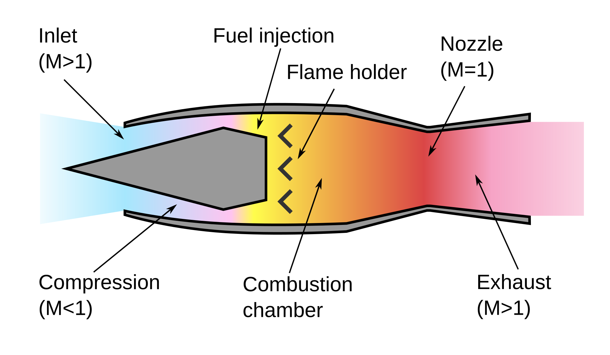

Náporový motor
Náporový motor je typ reaktivního motoru, který využívá rychlost letu objektu pro vstup vzduchu do kompresní a spalovací komory, kde je vstřikováno palivo a s vysokým tlakem dojde k samovznícení směsi.
Největší uplatnění nalezly náporové motory ve vojenském průmyslu, primárně jako sekundární pohonné jednotky pro řízené protiletadlové střely.
